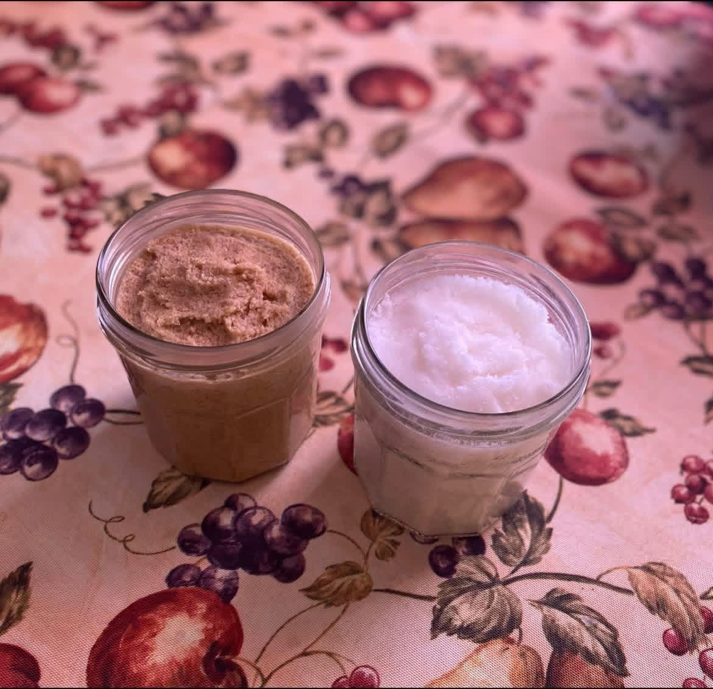

Make space for yourself
Even a familiar routine can become a comforting pause.
Welcome to Simply Natural Skincare — a place to celebrate everyday body care and the joy of treating yourself to something special.
We believe that even the smallest routines deserve a little beauty. Browse the collection, discover something that feels like you, and reach out with any questions.
Come say hello
It may not have been perfect, but those jars were the beginning of something I poured my heart into.
I started making sugar scrubs because I wanted simple, natural skincare made with ingredients I could trust. I never imagined it would grow into what it is today.
Looking back at my very first batch reminds me how far I’ve come—from experimenting in my kitchen to creating products I’m truly proud to share with all of you.
Thank you to everyone who has supported Simply Natural Skincare along the way. Every like, share, order, and kind word has meant more than you know.
Here’s to humble beginnings, learning every step of the way, and continuing to grow.
Three simple ideas that shape the feel of Simply Natural Skincare.
Even a familiar routine can become a comforting pause.
Choose the scents and moments that fit your own preferences.
Everyday care can be approachable, enjoyable, and personal.